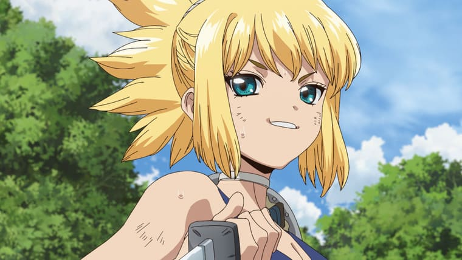
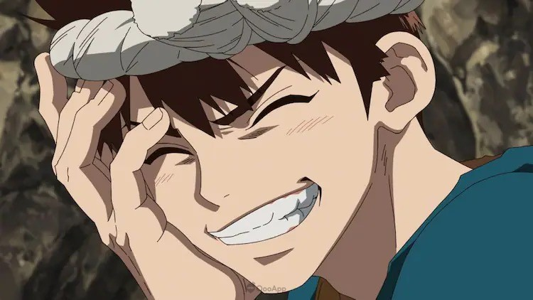
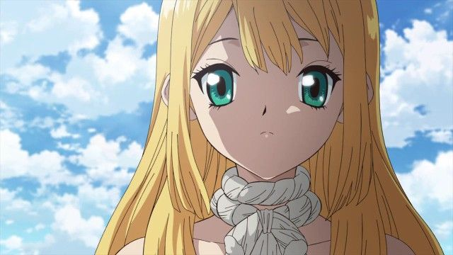

Dr.STONE

ดอกเตอร์สโตน หรือ ดร.สโตน เจ้าแห่งวิทยาศาสตร์กู้คืนอารยธรรมโลก (Dr.STONE) โดยที่เนื้อเรื่องย่อคือ นักเรียนมัธยมโอกิ ไทจุบอกกับอิชิงามิ เซ็นคูเพื่อนผู้รักวิทยาศาสตร์ว่าตนจะไปสารภาพรักกับโองาวะ ยุสึริฮะเพื่อนร่วมชั้น ไทจุเตรียมการจะสารภาพรักกับยุสึริฮะ แต่ความพยายามของไทจุก็ถูกขัดจังหวะด้วยแสงประหลาดบนท้องฟ้า ทำให้พวกเขากลายเป็นหินไปพร้อมกับประชากรมนุษย์ทั้งหมด 3,700 ปีต่อมาหลังการกลายเป็นหิน
เซ็นคูและไทจุได้กลับคืนสภาพเดิมจากการกลายเป็นหินมาอยู่ในโลกในยุคที่พวกเขาเรียกว่าโลกยุคหิน เซ็นคูค้นพบว่าการกลายเป็นหินสามารถรักษาได้ด้วยกรดไนตริก และตั้งใจจะฟื้นฟูอารยธรรมขึ้นใหม่ พร้อมทั้งช่วยเหลือเหล่าเพื่อนของเขา
อ่านต่อ
ตัวละครสำคัญภายในเรื่อง
- Ishigami Senku (อิชิงามิ เซ็นกุ )

- Ooki Taiju (โอกิ ไทจุ )

- Ogawa Yuzuriha (โองาวะ ยุสึริฮะ)

- Kohaku (โคฮาคุ)

- Kuromu (โครม/โครเมียม)

- Ruri (รูริ)

เพิ่มเติม